আমাদের কার্যক্রমOur Programs
তিনটি কাজ — দুর্যোগে ত্রাণ, শীতে কম্বল, আর শিক্ষা-সমাজের ছোট কাজ। ছবিতে ক্লিক করলে বড় করে দেখা যায়।Three lines of work — disaster relief, winter blankets, and small education-and-community deeds. Click any photo to view it full size.
দুর্যোগে ত্রাণDisaster Relief
বন্যা বা মহামারি — যখনই দুর্যোগ, আগে খোঁজ নিই কার কী দরকার, তারপর যা পারি পৌঁছে দিই।Flood or pandemic — whenever disaster strikes, we first ask who needs what, then deliver what we can.
- ✓ক্ষতিগ্রস্ত পরিবারের খোঁজ ও তালিকাFinding and listing affected families
- ✓ত্রাণ সংগ্রহ ও পরিবহনCollecting and carrying relief
- ✓হাতে হাতে বিতরণের হিসাবHand-to-hand distribution, accounted for
জামালপুর ২০১৬ · কোভিড-১৯-এ ১০০ পরিবার ২০২০ · সিলেট-সুনামগঞ্জ ২০২২ · কুমিল্লা-ফেনী-নোয়াখালি ২০২৪Jamalpur 2016 · 100 families in COVID-19, 2020 · Sylhet–Sunamganj 2022 · Cumilla–Feni–Noakhali 2024
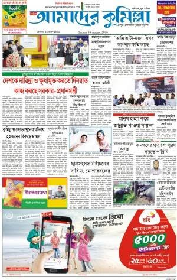
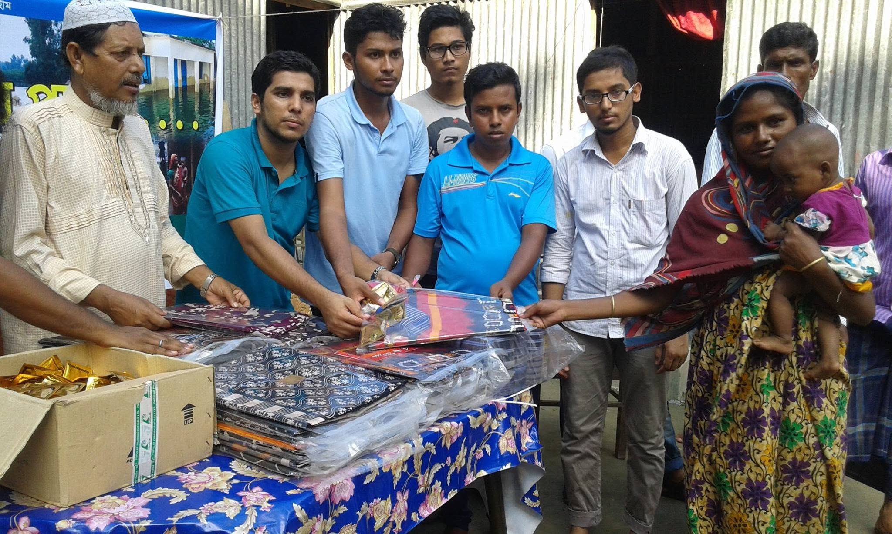
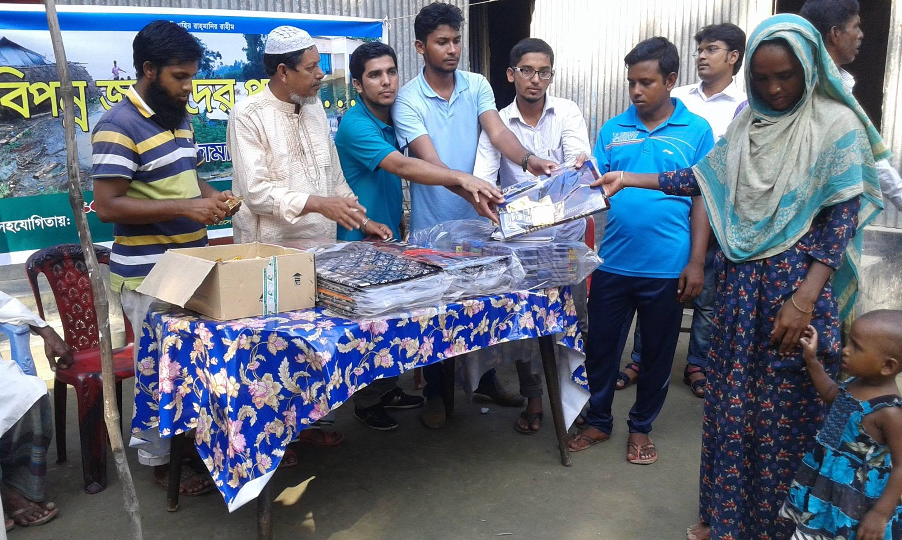
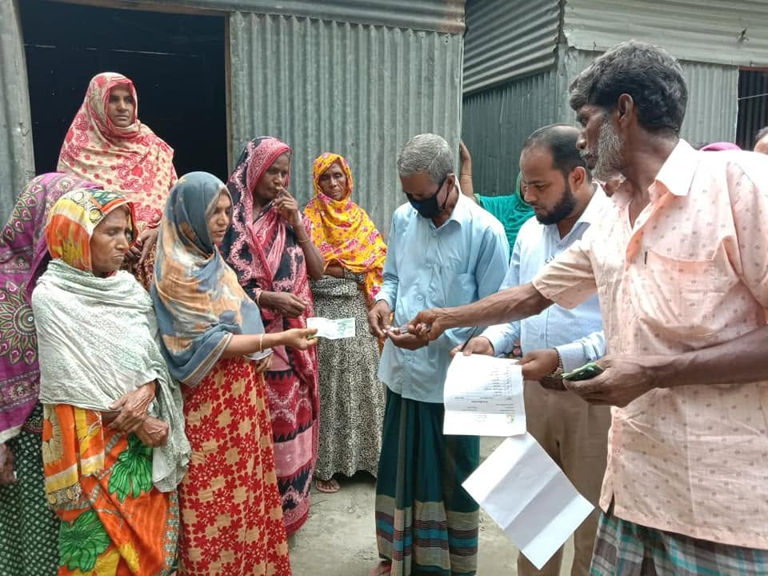
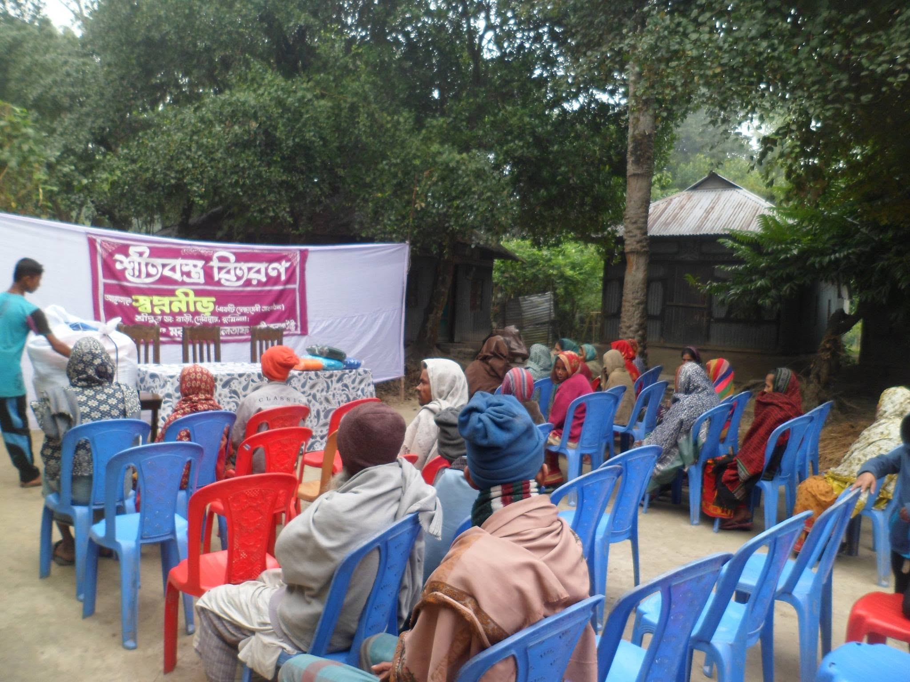
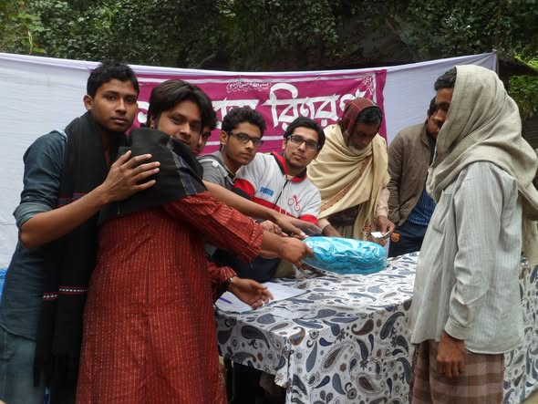
শীতবস্ত্র বিতরণWinter Clothes
শীত আসার আগেই দরকারি মানুষের তালিকা তৈরি হয় — যাতে কম্বল পৌঁছায় ঠিক যার ঘরে নেই।Before winter sets in, the list of those in need is ready — so blankets reach exactly the homes without one.
- ✓কম্বল-শাল সংগ্রহCollecting blankets and shawls
- ✓দেবীদ্বারের পরিবারগুলোর তালিকাA register of Debidwar families
- ✓শীতের শুরুতেই বিতরণDistribution at the very start of winter
২০১৪ সাল থেকে চলছে।Running since 2014.
শিক্ষা ও সমাজEducation & Community
ক্ষেতের ওই ছেলেটির কথা মনে রেখেই এই কাজ — যে বাচ্চা স্কুল ছাড়ছে, তাকে ফেরানোর চেষ্টা।This work remembers the boy in the field — trying to bring back every child who is leaving school.
- ✓স্কুল ছেড়ে যাওয়া শিশুদের খোঁজTracking dropout children
- ✓জাতীয় দিবসে কুইজ ও পুরস্কারQuizzes and prizes on national days
- ✓পড়াশোনার খরচে ছোট সহায়তাSmall help with study costs
ঈদে আনন্দ উপহার, দরিদ্রদের ঈদ সহায়তা — ২০১৪ থেকে ২০১৬।Eid gift drives and Eid support for the poor — 2014 to 2016.
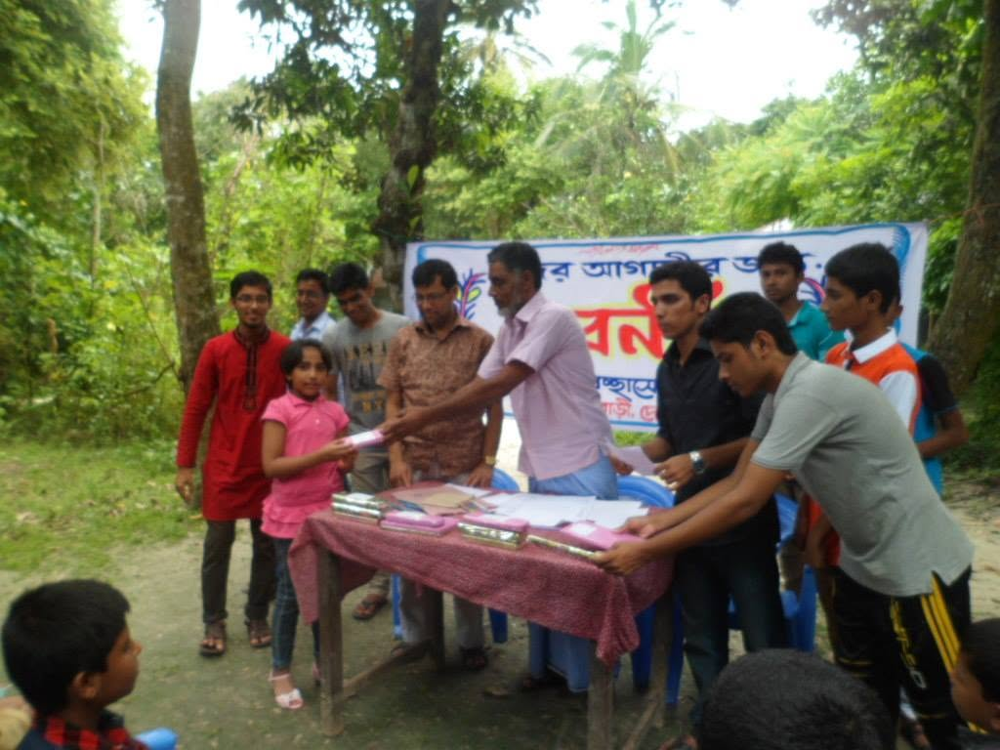
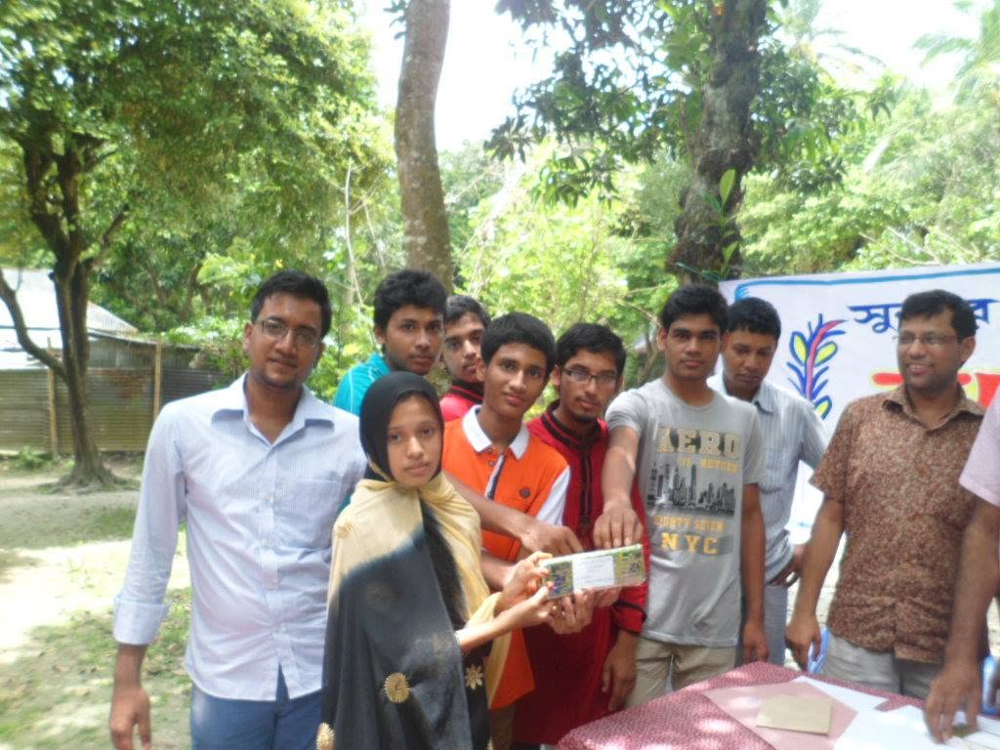
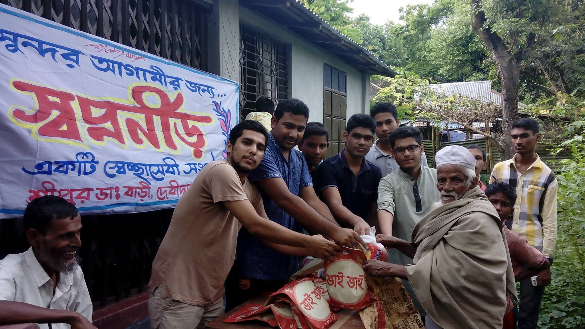
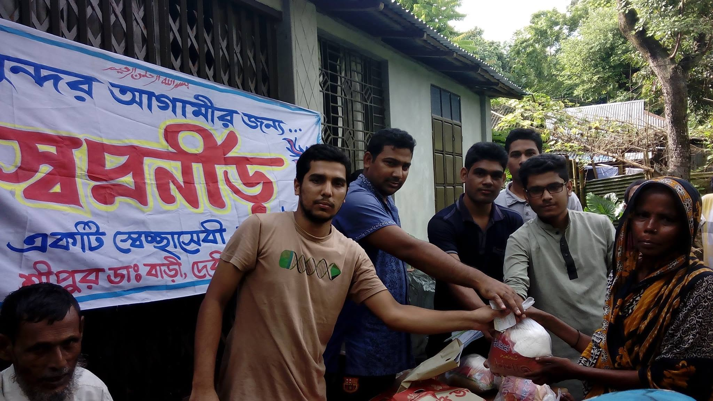
পত্রিকায় আমাদের কাজ In The Newspapers
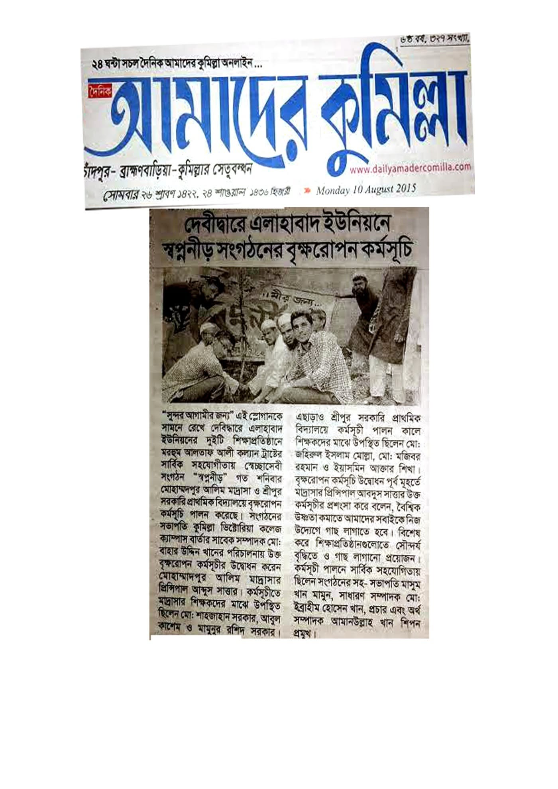
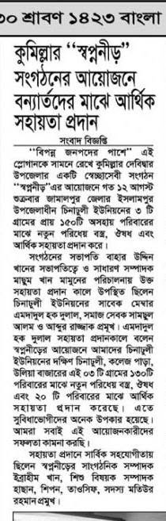
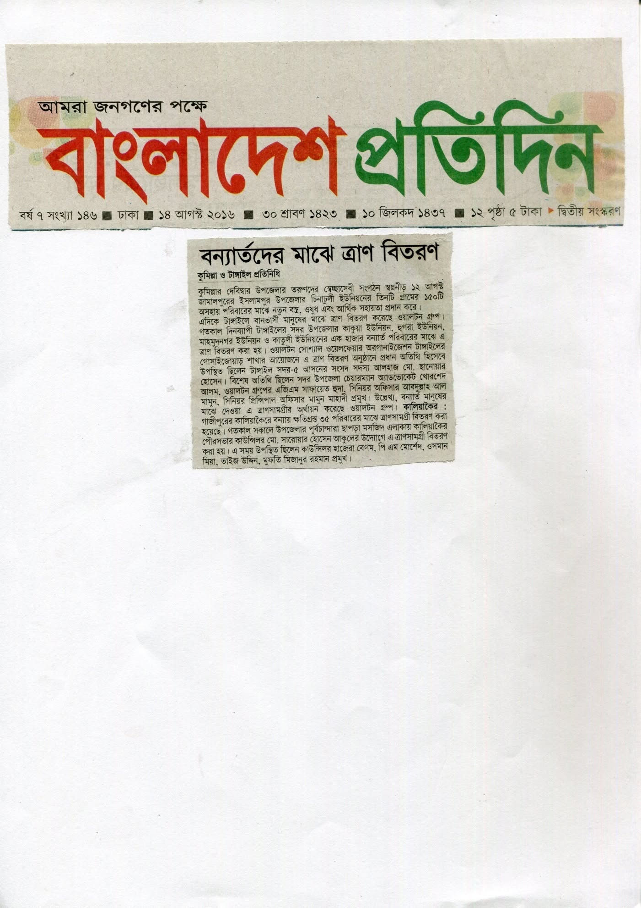
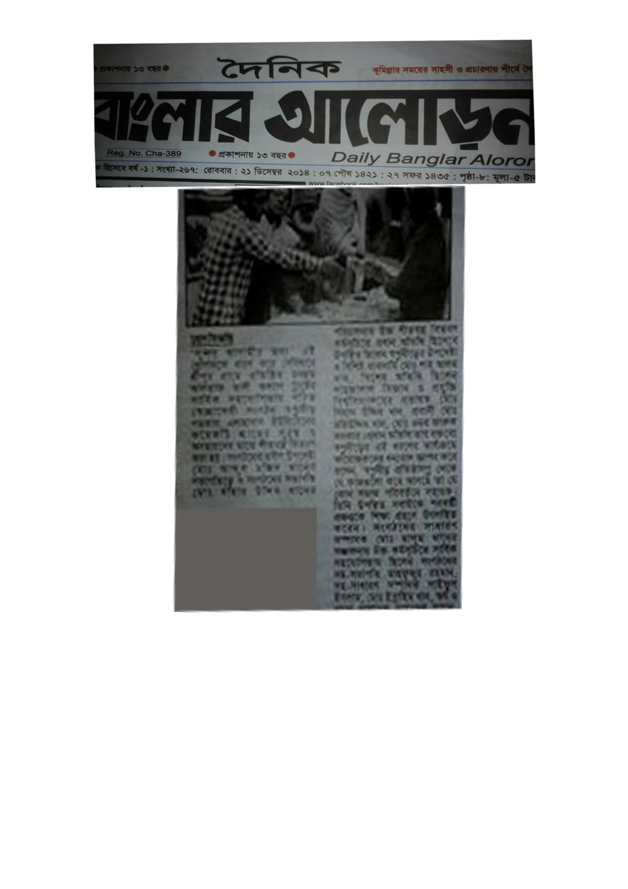
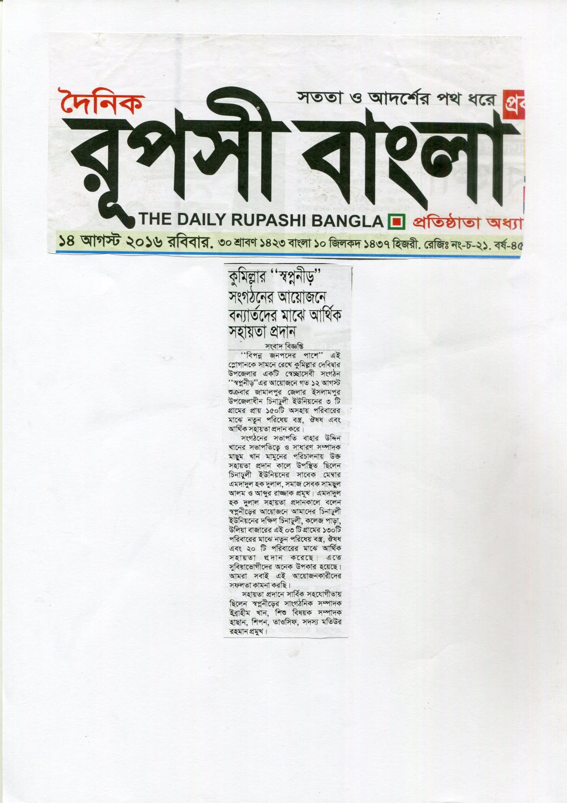
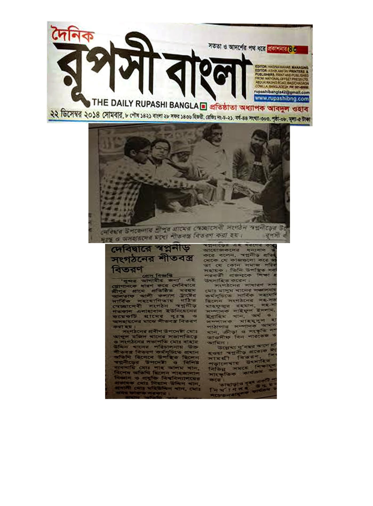
ছবিতে ক্লিক করলে সম্পূর্ণ কাটিং খোলে। এই কাজগুলোর খবর জাতীয় ও আঞ্চলিক পত্রিকায় প্রকাশিত হয়েছে।Click a clipping to open it full size. These efforts were covered in national and regional newspapers.